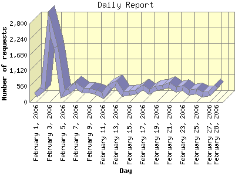

Report generated by Analog 6.0 and Report Magic 2.21
|
Web Server Statistics for "Harish Narayanan (hnarayan) - February 2006" Report generated by Analog 6.0 and Report Magic 2.21 |
The Daily Report identifies the activity for each day within the reporting period. Remember that one page hit can result in several server requests as the images for each page are loaded.

| Day | Number of requests | Number of bytes transferred | Percentage of the bytes | Percentage of the requests | |
|---|---|---|---|---|---|
| 1. | February 1, 2006 | 243 | 14.081 MB | 2.20% | 1.55% |
| 2. | February 2, 2006 | 461 | 20.223 MB | 3.17% | 2.95% |
| 3. | February 3, 2006 | 2,769 | 47.119 MB | 7.38% | 17.72% |
| 4. | February 4, 2006 | 1,960 | 33.274 MB | 5.21% | 12.54% |
| 5. | February 5, 2006 | 281 | 18.592 MB | 2.91% | 1.80% |
| 6. | February 6, 2006 | 401 | 19.860 MB | 3.11% | 2.57% |
| 7. | February 7, 2006 | 614 | 29.304 MB | 4.59% | 3.93% |
| 8. | February 8, 2006 | 424 | 21.814 MB | 3.41% | 2.71% |
| 9. | February 9, 2006 | 424 | 21.061 MB | 3.30% | 2.71% |
| 10. | February 10, 2006 | 364 | 19.320 MB | 3.02% | 2.33% |
| 11. | February 11, 2006 | 236 | 13.624 MB | 2.13% | 1.51% |
| 12. | February 12, 2006 | 551 | 29.532 MB | 4.62% | 3.53% |
| 13. | February 13, 2006 | 650 | 28.234 MB | 4.42% | 4.16% |
| 14. | February 14, 2006 | 301 | 27.229 MB | 4.26% | 1.93% |
| 15. | February 15, 2006 | 304 | 15.418 MB | 2.41% | 1.95% |
| 16. | February 16, 2006 | 354 | 23.878 MB | 3.74% | 2.27% |
| 17. | February 17, 2006 | 526 | 28.282 MB | 4.43% | 3.37% |
| 18. | February 18, 2006 | 351 | 16.219 MB | 2.54% | 2.25% |
| 19. | February 19, 2006 | 499 | 24.707 MB | 3.87% | 3.19% |
| 20. | February 20, 2006 | 531 | 22.486 MB | 3.52% | 3.40% |
| 21. | February 21, 2006 | 596 | 36.068 MB | 5.64% | 3.81% |
| 22. | February 22, 2006 | 446 | 34.263 MB | 5.36% | 2.85% |
| 23. | February 23, 2006 | 498 | 16.545 MB | 2.59% | 3.19% |
| 24. | February 24, 2006 | 326 | 16.825 MB | 2.63% | 2.09% |
| 25. | February 25, 2006 | 375 | 10.216 MB | 1.60% | 2.40% |
| 26. | February 26, 2006 | 279 | 16.669 MB | 2.61% | 1.79% |
| 27. | February 27, 2006 | 290 | 9.193 MB | 1.44% | 1.86% |
| 28. | February 28, 2006 | 570 | 24.894 MB | 3.90% | 3.65% |
Most active day February 3, 2006 : 2,560 pages sent. 2,769 requests handled. 49,407,769.00 served.
Daily average: 558 requests handled. 22.819 MB served.
This report was generated on April 27, 2006 10:34.
Report time frame February 1, 2006 00:22 to February 28, 2006 23:57.
| Web statistics report produced by: | |
 Analog 6.0 Analog 6.0 |  Report Magic 2.21 Report Magic 2.21 |